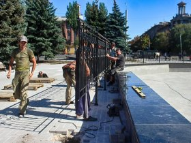
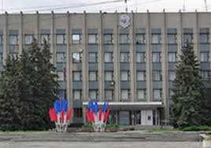

Ремонтные работы на иловайской площади Победы кипят и не утихают ни на день, пишет иловайский блогер Егор Воронов.
Даже в воскресенье, тут работают коммунальщики и строители.
Вокруг центрального фонтана идёт монтаж металлических ограждений - кованой решетки около полутора метров высотой.
Для ее установки рабочие демонтировали часть плитки и вырыли углубление примерно в 30-40 сантиметров. Скорее всего, основание решётки будут заливать бетоном.
Как я понимаю (хотя, может, это и не так), изначально тут не планировались ограждения. От самого "бортика" фонтана они находятся в полуметре. Проходящие мимо жители Иловайска шутят:
"А электричество подключать к ней будут? Вообще, такой шаг, конечно, наводит на разные мысли".
А вот коммунальщики только за подобное новшество:
"Тут велосипедисты уже начали запрыгивать на парапет. Долго ли продержится этот ремонт? Да и мусорить, думаю, будут меньше. Где сидеть? Да вон скамеек сколько - пусть сидят. Главное, чтобы относились по-человечески к нашему труду".
В ДНР повысят зарплаты сотрудникам коммунальных служб
 Зарплаты сотрудников коммунальных служб ДНР будут повышены в ближайшее время.
Об этом сообщил глава ДНР Денис Пушилин во время рабочей поездки в Старобешево.
«Знаю, что вам сейчас крайне сложно. Мы долго удерживали ситуацию, чтобы для наших граждан тарифы не повышались. С другой стороны, есть сотрудники коммунальных служб, которые получают деньги за счет оплаты услуг. В самое ближайшее время мы ждем повышения зарплат сотрудникам коммунальных служб».
Он также добавил, что с 1 октября запланировано выравнивание тарифов на отопление и горячее водоснабжение.
«Платежка увеличится на 10–13%. Это не закроет проблемы коммунальщиков, мы прекрасно это понимаем, но повышать больше мы не будем», — подчеркнул Пушилин. — Мы планируем направить средства, которые выделены в рамках реализации Программы развития, на погашение разницы тарифов».
Стоит напомнить, с 1 октября в ряде городов ДНР вырастут тарифы на отопление и горячее водоснабжение.
Зарплаты сотрудников коммунальных служб ДНР будут повышены в ближайшее время.
Об этом сообщил глава ДНР Денис Пушилин во время рабочей поездки в Старобешево.
«Знаю, что вам сейчас крайне сложно. Мы долго удерживали ситуацию, чтобы для наших граждан тарифы не повышались. С другой стороны, есть сотрудники коммунальных служб, которые получают деньги за счет оплаты услуг. В самое ближайшее время мы ждем повышения зарплат сотрудникам коммунальных служб».
Он также добавил, что с 1 октября запланировано выравнивание тарифов на отопление и горячее водоснабжение.
«Платежка увеличится на 10–13%. Это не закроет проблемы коммунальщиков, мы прекрасно это понимаем, но повышать больше мы не будем», — подчеркнул Пушилин. — Мы планируем направить средства, которые выделены в рамках реализации Программы развития, на погашение разницы тарифов».
Стоит напомнить, с 1 октября в ряде городов ДНР вырастут тарифы на отопление и горячее водоснабжение.
День города Иловайска: Салтыкова вместо Дони и организованный развоз жителей
Иловайск готовится к празднованию Дня города, которое в этом году состоится 20 сентября.
Мэр города сообщил, что из российских звезд выступать для жителей будет группа "Мираж" и поп-певица Ирина Салтыкова.
Ранее планировалось, что на празднике выступит рэпер Дони.
Однако Иван Приходько на своей странице в социальных сетях сообщил, что музыкант не сможет приехать.
"Увы не смогли договориться с погранслужбой РФ о его въезде. Он гражданин Казахстана".
После концерта, который завершится в 22:00, запланирован развоз жителей по поселкам.
О нем будет сообщено дополнительно.
Кроме большого концерта, который начнется 20 сентября в 19:00, в Иловайске в этот день состоится еще много мероприятий.
С 14 сентября администрация Иловайска возобновляет проведение приемов и оказание консультаций
Мэр Иловайска сообщил, что администрация города Иловайска возобновляет проведение приёмов, оказание консультативных и иных услуг с 14 сентября.
С целью недопущения распространения новой коронавирусной инфекции среди населения города, соблюдение масочного режима и социального дистанцирования в задании администрации является обязательным для всех сотрудников и посетителей.
График работы администрации города Иловайск: с понедельника по четверг с 08:00 до 17:00, в пятницу с 08:00 до 16:00. Перерыв с 12:00 до 12:48.
Напомним, администрация Иловайска перешла в конце августа на удаленный режим работы по причине того, что у одного из сотрудников был подтвержден COVID-19.